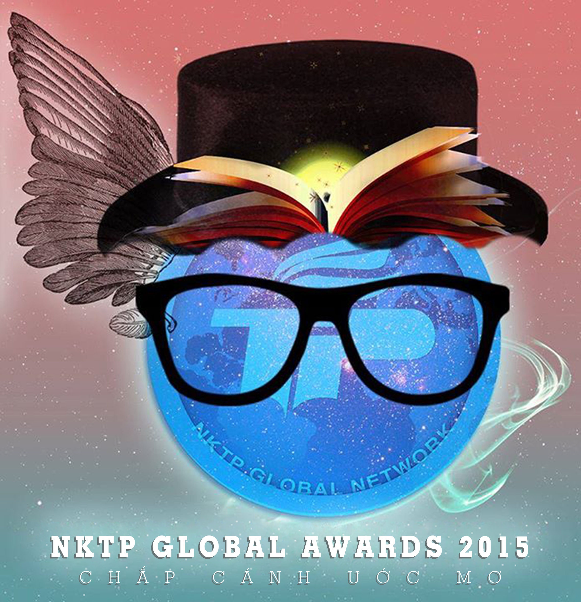

Người đồng sáng lập giải thưởng
Sau những chương trình đầu tiên của Cửa sổ du học của NKTP Global Network từ tháng 9/2012 đến tháng 7/2013, Giải thưởng NKTP Global đã chính thức ra mắt với các em học sinh Trần Phú. Không giống như những giải thưởng ở các môn văn hóa, NKTP Global Award là một giải thưởng rất “Trần Phú”, rất mới mẻ đối với các em học sinh khi chính các anh chị CHS là những người đánh giá bài dự thi của các em.
Bạn có bao giờ tò mò ai là người đã sáng lập và lên ý tưởng cho giải thưởng NKTP Global không? Đó chính là:
- Anh Lê Trung Hiếu (chuyên Toán 05-08)
- Chị Đỗ Trang Anh (chuyên Anh 06-09)
- Anh Phạm Đức Cường (chuyên Anh 06-09)
- Chị Phạm Thị Hà My (chuyên Tin 06-09)
Hãy cùng tìm hiểu những founder cực kì tài giỏi này nhé.